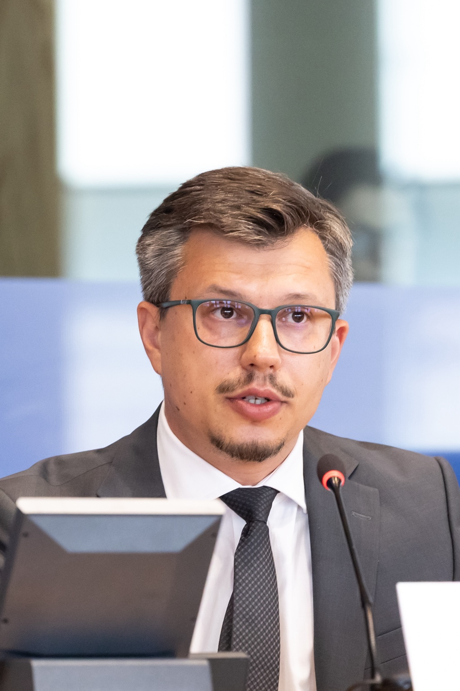
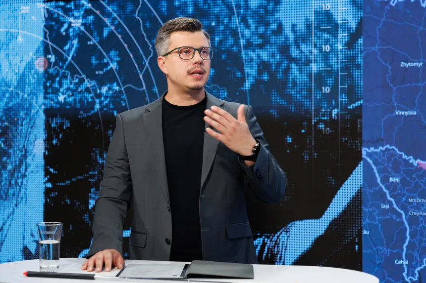

Resilience and Adaptation Among Ukrainians Across Two Cross‐Sectional Measurements Amid Prolonged Conflict
Journal of Community Psychology · 54(5), e70122
УКРАЇНА · ЄВРОПЕЙСЬКА БЕЗПЕКА · СТІЙКІСТЬ
Дослідження для формування безпекової політики
Дослідник та експерт із питань безпеки України, суспільної стійкості та європейського співробітництва.

Міжнародний центр
оборони та безпеки (ICDS)
Сумський державний
університет
Центр досліджень
регіональної безпеки
01 / ПРО МЕНЕ
Український політолог, який спеціалізується на питаннях національної стійкості, цивільно-військового співробітництва та відновлення України.
У січні 2025 року я приєднався до Міжнародного центру оборони та безпеки (ICDS) як позаштатний науковий співробітник. Також продовжую працювати доцентом Сумського державного університету та директором Центру досліджень регіональної безпеки при університеті.
У своїй роботі я поєдную академічні дослідження з обговоренням політичних рішень щодо того, як суспільства протистоять викликам війни, відновлюють інституції та зміцнюють безпеку. До моїх наукових інтересів також належать європейська та євроатлантична інтеграція України, повернення біженців і співпраця з країнами Північної Європи та Балтії.
Профіль на сайті ICDS02 / ДОСЛІДЖЕННЯ
Безпека крізь призму
інституцій, громад і людей.
Як держави, інституції та суспільства витримують кризи, адаптуються до потрясінь і зберігають спроможність діяти.
Взаємодія збройних сил, органів влади та цивільного населення під час війни, реагування на кризи й відновлення.
Безпекові, інституційні та суспільні умови відбудови України, вдосконалення врядування й забезпечення довгострокової модернізації.
Умови повернення українців додому, їхньої реінтеграції у громади та участі у відновленні країни.
Реформи, партнерства та безпекова співпраця на шляху України до членства в Європейському Союзі та НАТО.
Співпраця України з країнами Північної Європи та Балтії: спільні безпекові пріоритети та уроки російської війни.
Готовність громад, місцеве врядування та реагування на безпекові виклики, з особливою увагою до прикордонних регіонів України.
Стійкість до дезінформації, довіра до джерел інформації та роль достовірної комунікації у зміцненні суспільної згуртованості.
03 / ПУБЛІКАЦІЇ
Reconstruction, demographic constraints and EU accession: priorities for a recovery shaped by lasting insecurity.
Статті в наукових журналах і розділи наукових видань.
Journal of Community Psychology · 54(5), e70122
Democratic Resilience in the Baltics, Vol. 2 · Springer · pp. 181–207
Investment Management and Financial Innovations · 22(4), 393–404
The Journal of Slavic Military Studies · 38(2), 157–178
Ukraine’s Journey to Recovery, Reform and Post-War Reconstruction · Springer · pp. 63–73
Stress and Health · 41(2), e70033
Problems and Perspectives in Management · 22(1), 432–445
International Journal of Media and Information Literacy · 7(1)
Revista Amazonia Investiga · 10(48), 170–180
International Journal of Media and Information Literacy · 6(1)
Wiadomości Lekarskie · 74(5), 1125–1129
Wiadomości Lekarskie · 74(5), 1137–1141
Bulletin of Kyiv National University of Culture and Arts. Series in Management of Social and Cultural Activity · Issue 2, 32–61
Дослідження, аналітичні записки та коментарі.
European Parliament · With Dmitri Teperik
International Centre for Defence and Security · 4 September
International Centre for Defence and Security · 28 May
International Centre for Defence and Security · 27 May
International Centre for Defence and Security · 25 February
International Centre for Defence and Security · 22 May
ICDS · With Kalev Stoicescu, Keir Giles & Matthew D. Johnson
International Centre for Defence and Security · 19 May
Конференційні есе та опубліковані тези доповідей.
Conference on Russia Papers · 6(1), 56–66 · 28 May 2026
Prehospital and Disaster Medicine · 41(S1), s199–s199
За вибраними фільтрами публікацій не знайдено.
2025 — ДОТЕПЕР
Міжнародний центр оборони та безпеки · Естонія
2016 — ДОТЕПЕР
Центр досліджень регіональної безпеки
Сумський державний університет · Україна
2024 — 2025
Підрозділ внутрішньої безпеки · Київський офіс GLOBSEC
ОСВІТА
Доктор політичних наук
Волинський національний університет імені Лесі Українки
Кандидат політичних наук
Харківський національний університет імені В. Н. Каразіна
Бакалавр і магістр з інженерної механіки
Сумський державний університет
05 / ВИСТУПИ ТА МЕДІА

Аналіз подій в Україні, питань стійкості та європейської безпеки для фахової спільноти й широкої аудиторії.
Робочі мови: англійська, українська та російська
Запити від медіа та запрошення до виступівПрезентація дослідження потреб України у відбудові в мирний час.
Переглянути запис засідання комітетуВиступ на конгресі Асоціації дослідження національностей (ASN).
Круглий стіл із питань національної ідентичності та суспільної стійкості: уроки України для країн Балтії.
Презентація дослідження підготовки Росії до війни проти України.
Ефективність і демократичний цивільний контроль в оборонному секторі.
06 / КОНТАКТИ
Спільні дослідження, фахові обговорення,
запрошення до виступів і запити від медіа.
{kind=link}
{kind=link}
{kind=link}
{kind=link}